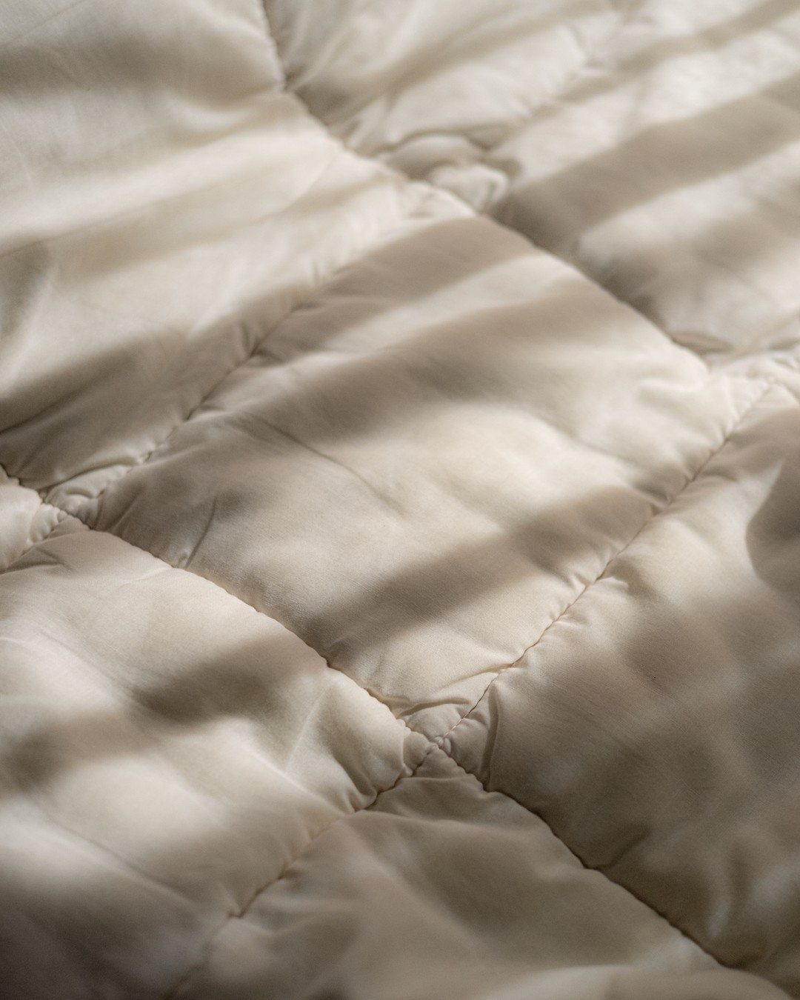
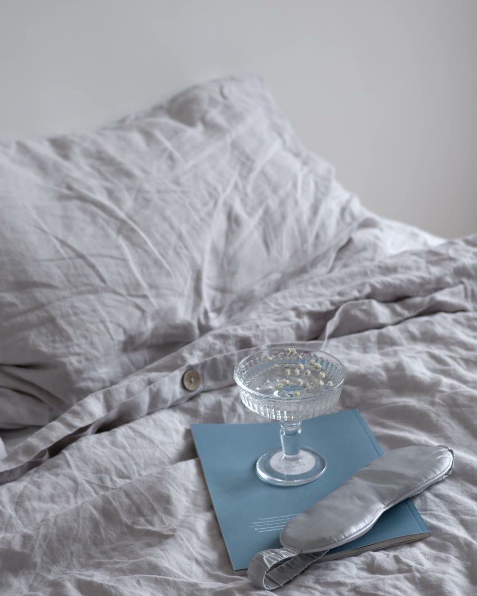
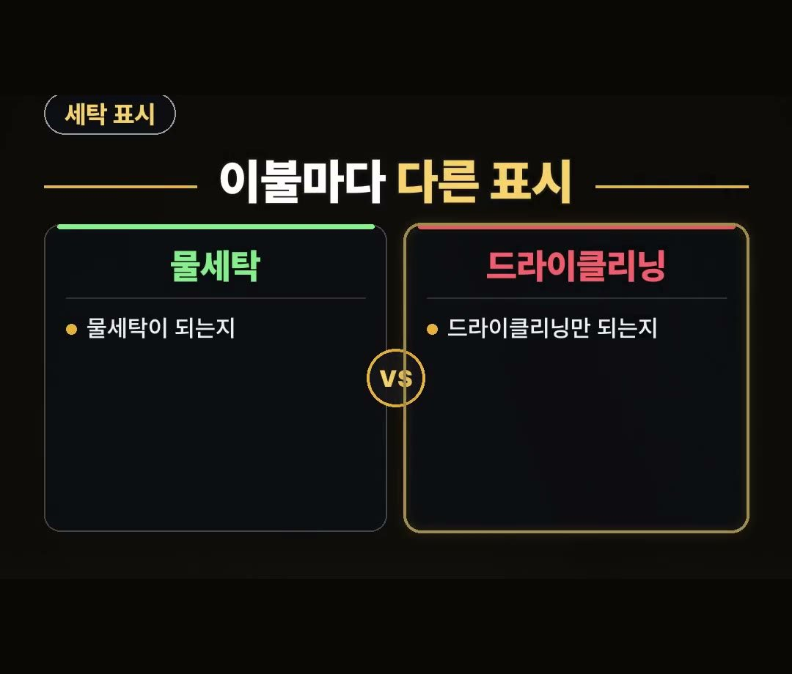
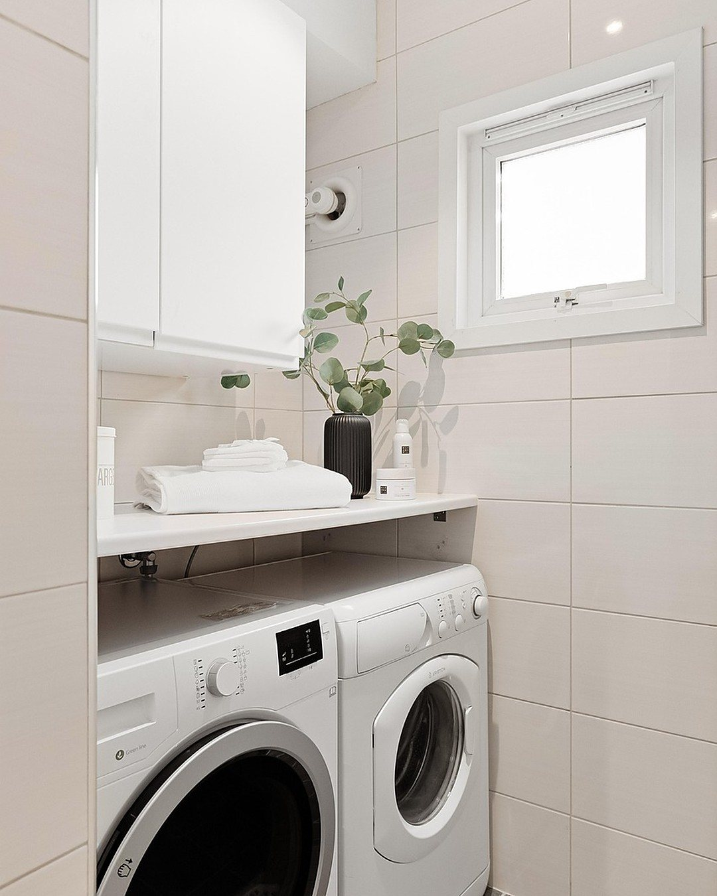
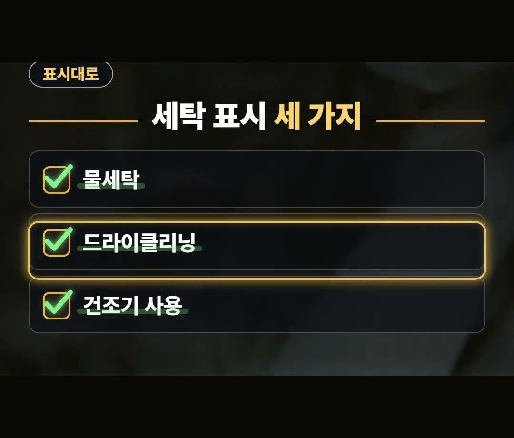
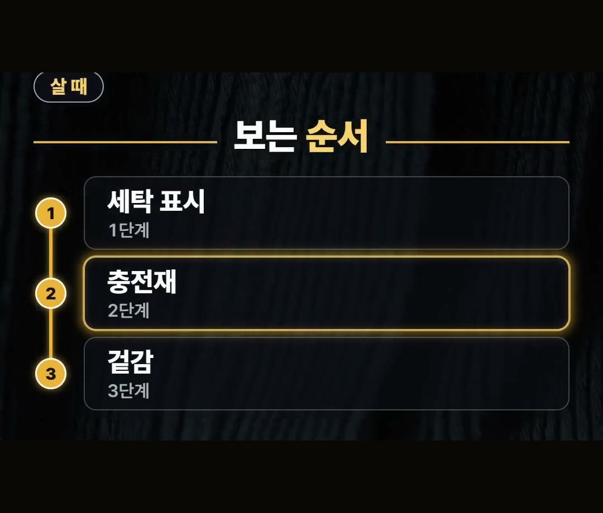
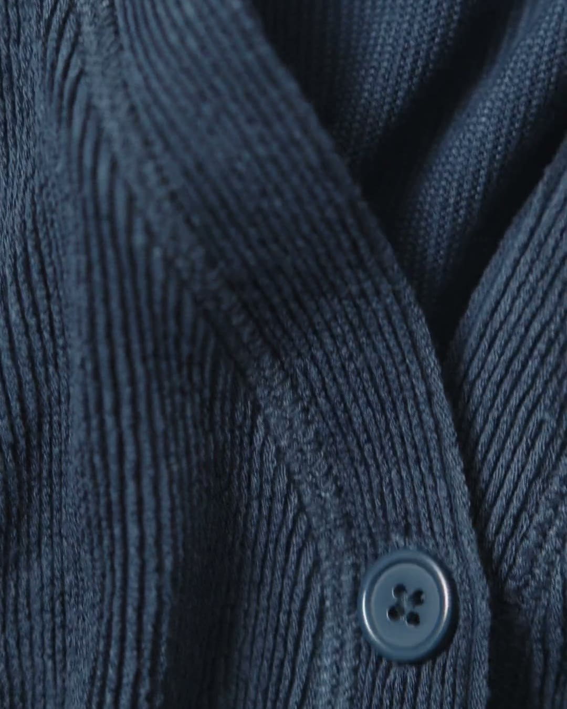
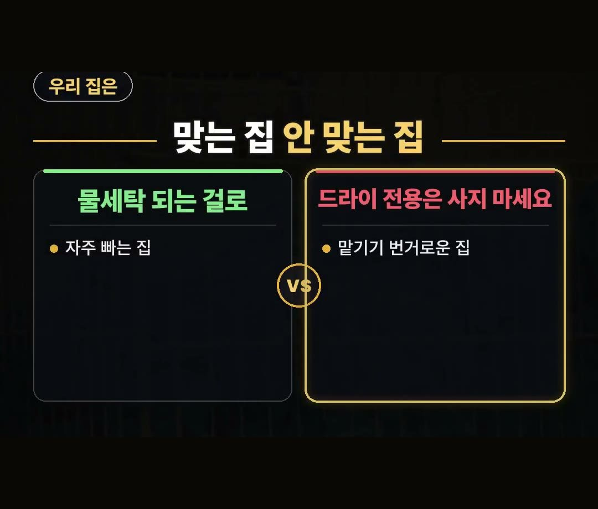

차렵이불 추천, 집에서 빨 수 있는지 갈리는 숨은 조건
※ 이 글에는 제휴 링크가 포함되어 있으며, 링크를 통해 구매하시면 일정 수수료를 받을 수 있습니다. (가격은 같습니다)
※ 이 포스팅은 쿠팡 파트너스 활동의 일환으로, 이에 따른 일정액의 수수료를 제공받습니다.
※ 이 콘텐츠는 토스쇼핑 쉐어링크 활동의 일환으로, 링크를 통한 구매가 발생하면 일정 수수료를 지급받습니다.

계절이 바뀌어 이불을 꺼내거나 새로 들일 때가 되면 색이나 무늬부터 눈에 들어오기 쉬워요.
그런데 차렵이불 추천을 찾아볼 때는 집에서 빨 수 있는지가 먼저 갈릴 수 있습니다.
이 글에서는 세탁 표시를 중심으로, 고를 때 볼 점을 차분히 정리했어요.
아낌 소장이에요!
차렵이불은 이불째 빨게 되는 일이 많다는 것, 그래서 물세탁·드라이클리닝·건조기 사용 여부를 제품의 세탁 표시대로 따라야 한다는 것만 정리해 봤어요.
이 두 가지만 기억하세요! 😊
차렵이불은 어떤 이불일까요

차렵이불은 솜을 얇게 두어 지은 이불이에요.
이름은 익숙한데, 어떤 이불인지 정확히 말하라고 하면 막상 헷갈리는 분도 계실 거예요.

차렵이불은 커버를 벗겨 빠는 이불과 달리 이불째 빨게 되는 일이 많습니다.
그래서 고를 때도 무늬나 색만 보지 말고, 빨래할 때 어떻게 다뤄야 하는지를 같이 떠올려 보는 게 좋아요.
이불 전체를 한 번에 빨아야 하니 세탁 방법이 집마다 생활에 맞는지가 따라붙는 거예요.
이불마다 다른 세탁 표시

이 글의 핵심은 세탁 표시예요.
물세탁이 되는지, 드라이클리닝만 되는지가 이불마다 다르게 적혀 있거든요.
겉모습이 비슷해 보여도 표시는 서로 다를 수 있습니다.
- 물세탁이 되는지
- 드라이클리닝만 되는지
그래서 새 이불을 들이면 빨기 전에 표시부터 확인하고, 살 때도 이 표시를 먼저 보는 습관을 들이면 좋아요.
표시를 모르는 채로 빨아 버리면 곤란할 수 있으니까요.
건조기도 표시대로 따르세요

건조기도 마찬가지예요.
물세탁이 되더라도 건조기까지 쓸 수 있는지는 따로 봐야 합니다.
제품 표시대로 따르는 게 좋아요.

세탁 표시에서 확인할 것을 세 가지로 묶어 봤어요.
- 물세탁
- 드라이클리닝
- 건조기 사용
이 세 가지를 제품 표시와 하나씩 맞춰 보면 됩니다.
표시가 곧 답이라고 생각하시면 편해요.
차렵이불 추천 비교, 이 순서로 보세요

차렵이불 추천 비교를 할 때 볼 기준을 순서대로 정리해 봤어요.
어디까지나 고를 때 보기 편하도록 우리 말로 묶은 순서입니다.
- 1단계: 세탁 표시
- 2단계: 충전재
- 3단계: 겉감

세탁 표시를 본 다음에는 충전재와 겉감이에요.
라벨과 상품 설명에서 어떤 솜인지, 겉감 소재가 무엇인지 같이 보세요.
라벨만 보거나 상품 설명만 보지 말고 둘을 함께 살피면 빠뜨리는 게 줄어요.
이런 제품도 있어요.
상품 설명에 따르면 극세사로 만든, 양면을 다 쓰는 리버서블 차렵이불이라고 합니다.
이런 제품도 세탁 표시, 충전재, 겉감을 같은 순서로 확인하면 됩니다.
우리 집에는 맞을까, 안 맞을까

같은 이불이라도 빨래 습관에 따라 맞는 집과 안 맞는 집이 갈려요.
기준은 빨래 습관이에요.
- 이불을 자주 빠는 집: 물세탁 되는 걸로 고르세요
- 드라이클리닝 맡기기 번거로운 집: 드라이 전용은 사지 마세요
자주 빠는 집인데 드라이클리닝만 되는 이불을 고르면, 빨 때마다 맡겨야 해서 불편할 수 있어요.
반대로 맡기는 게 번거로운 집이라면 처음부터 드라이 전용은 빼고 보는 게 마음 편합니다.
정리
- 차렵이불은 솜을 얇게 두어 지은 이불이라 이불째 빨게 되는 일이 많아요.
- 물세탁·드라이클리닝·건조기 사용 여부는 제품의 세탁 표시대로 따르세요.
- 살 때는 세탁 표시, 충전재, 겉감 소재를 라벨과 상품 설명에서 같이 보세요. 차렵이불 추천을 찾는다면 빨래 습관에 맞는지부터 따져 보면 됩니다.
링크는 아래에 모아 두었어요.
📌 2026년 10월 기준 정보예요. 가격은 시기에 따라 달라질 수 있어요.
영상 화면: Pexels (Alexander Mass, Erofili Charkoftaki, Hanna Pad, KATRIN BOLOVTSOVA, Owen Mathias, Plastic Lines)
사진: Pexels (Plastic Lines)
사진: Pixabay (23555986)